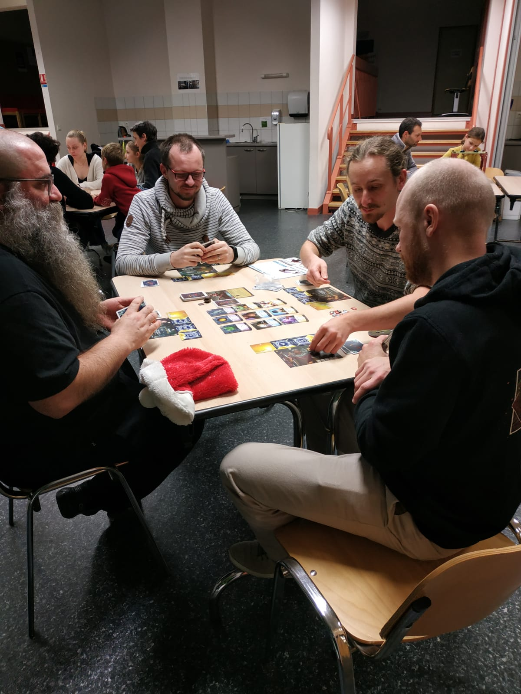
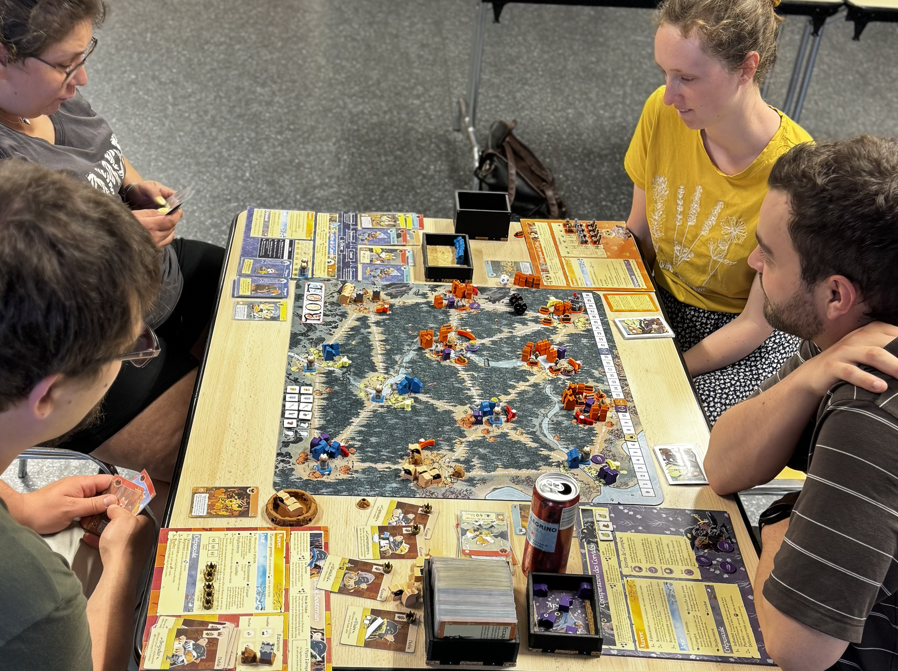

Partager
Découvrir un jeu, expliquer une règle, rire ensemble… chaque soirée est une occasion de partager bien plus qu'une partie.
En 2022, tout a commencé autour d'un projet.
Aujourd'hui, ce projet rassemble une soixantaine de joueurs.

L'idée était simple : créer un lieu où chacun pourrait se retrouver autour des jeux de société modernes, quel que soit son âge ou son expérience.
Nous voulions avant tout proposer des soirées conviviales, accessibles à tous, où l'on prend autant de plaisir à rencontrer de nouvelles personnes qu'à découvrir de nouveaux jeux.
Ce qui n'était au départ qu'un projet partagé par quelques passionnés est rapidement devenu une véritable aventure humaine.
Les Jeux du Plateau n'est pas seulement une association de jeux de société. C'est avant tout un lieu où l'on partage des moments, où l'on découvre de nouvelles personnes et où chacun trouve naturellement sa place autour d'une table.
Découvrir un jeu, expliquer une règle, rire ensemble… chaque soirée est une occasion de partager bien plus qu'une partie.

Chaque nouveau joueur est attendu avec la même attention. Ici, personne ne reste seul bien longtemps.

Les Jeux du Plateau, ce sont des soirées où l'on prend le temps de jouer, d'échanger et simplement de passer un bon moment.
Depuis 2022, Les Jeux du Plateau s'est développé grâce à toutes les personnes qui ont rejoint l'aventure. Chaque nouvelle rencontre apporte son lot de découvertes, de parties mémorables et de nouveaux visages.
Une communauté de joueurs qui continue de grandir au fil des saisons.
Au Mazet-Saint-Voy, à Tence et au Chambon-sur-Lignon.
Un rendez-vous annuel réservé aux adhérents, devenu un moment fort de la vie de l'association.
Une ludothèque variée qui s'enrichit régulièrement pour satisfaire tous les joueurs.
Derrière chaque partie se cachent des rencontres, des découvertes et de nombreux souvenirs. Voici bientôt les témoignages de celles et ceux qui font vivre Les Jeux du Plateau.
« Témoignage à venir... »
« Témoignage à venir... »
Les Jeux du Plateau continue de grandir grâce aux personnes qui poussent la porte de nos soirées, découvrent un jeu, échangent quelques mots... puis reviennent partager de nouveaux moments avec nous.
Découvrir les prochaines rencontres